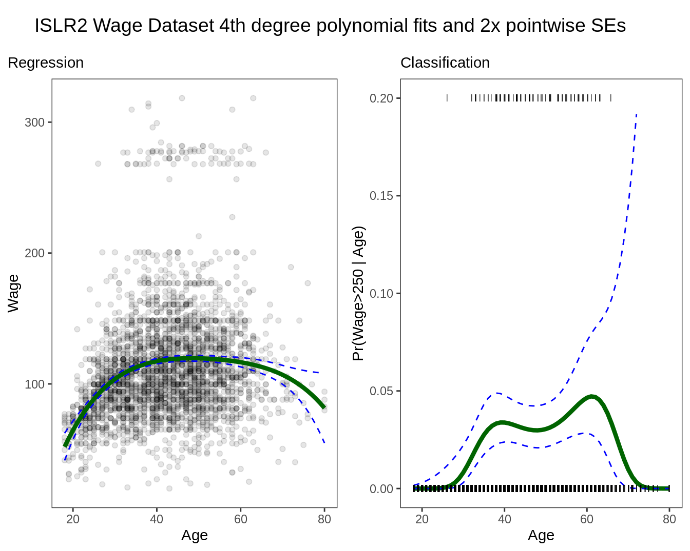
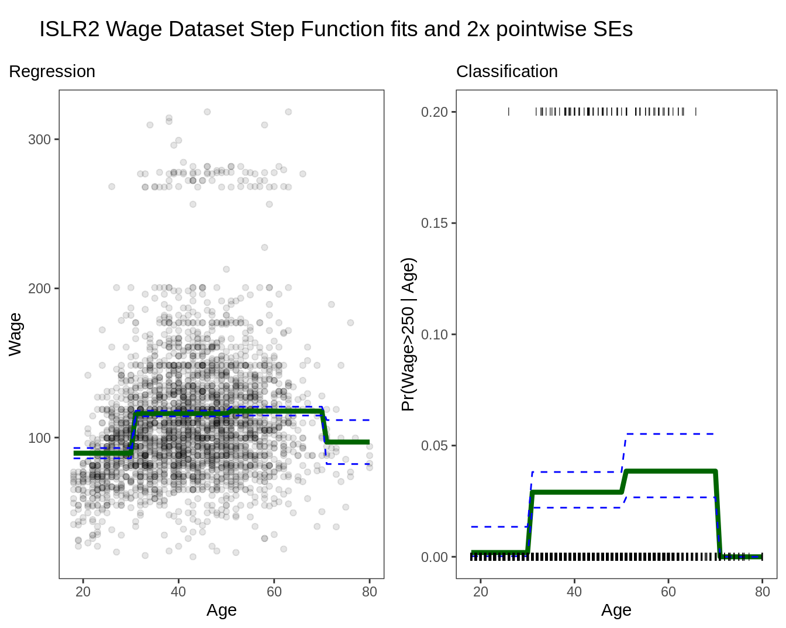

7.1 Polynomial and Step Regression
The truth is never linear!
But often linearity is good enough.
This chapter presents a hierarchy of methods that offer more flexibility without losing much of the ease and interpret ability of linear models. The first is a polynomial expansion.
\[y_i = \beta_0+\beta_1x_i+\beta_2x_i^2...+\beta_dx_i^d+\epsilon_i\]Wage <- as_tibble(ISLR2::Wage) %>%
mutate(high = factor(wage > 250,
levels = c(TRUE, FALSE),
labels = c("High", "Low")))
rec_poly <- recipe(wage ~ age, data = Wage) %>%
step_poly(age, degree = 4)
lm_spec <- linear_reg() %>%
set_mode("regression") %>%
set_engine("lm")
poly_wf <- workflow() %>%
add_model(lm_spec) %>%
add_recipe(rec_poly)
poly_fit <- fit(poly_wf, data = Wage)
age_range <- tibble(age = seq(min(Wage$age), max(Wage$age)))
regression_lines <- bind_cols(
augment(poly_fit, new_data = age_range),
predict(poly_fit, new_data = age_range, type = "conf_int")
)
regression_plot <- Wage %>%
ggplot(aes(age, wage)) +
geom_point(alpha = 0.1) +
geom_line(aes(y = .pred), color = "darkgreen",
size = 1.5,
data = regression_lines) +
geom_line(
aes(y = .pred_lower),
data = regression_lines,
linetype = "dashed",
color = "blue"
) +
geom_line(
aes(y = .pred_upper),
data = regression_lines,
linetype = "dashed",
color = "blue"
) +
theme_bw() +
theme(
strip.placement = "outside",
panel.grid = element_blank(),
strip.background = element_blank(),
plot.title.position = "plot"
) +
labs(x = "Age", y = "Wage",
subtitle = "Regression")
rec_poly <- recipe(high ~ age, data = Wage) %>%
step_poly(age, degree = 4)
lr_spec <- logistic_reg() %>%
set_engine("glm") %>%
set_mode("classification")
lr_poly_wf <- workflow() %>%
add_model(lr_spec) %>%
add_recipe(rec_poly)
lr_poly_fit <- fit(lr_poly_wf, data = Wage)
classification_lines <- bind_cols(
augment(lr_poly_fit, new_data = age_range, type = "prob"),
predict(lr_poly_fit, new_data = age_range, type = "conf_int")
)
classification_plot <- classification_lines %>%
ggplot(aes(age)) +
ylim(c(0, 0.2)) +
geom_line(aes(y = .pred_High), color = "darkgreen",
size = 1.5) +
geom_line(aes(y = .pred_lower_High),
color = "blue",
linetype = "dashed") +
geom_line(aes(y = .pred_upper_High),
color = "blue",
linetype = "dashed") +
geom_jitter(
aes(y = (high == "High") / 5),
data = Wage,
shape = "|",
height = 0,
width = 0.2
) +
theme_bw() +
theme(
strip.placement = "outside",
panel.grid = element_blank(),
strip.background = element_blank()
) +
labs(x = "Age", y = "Pr(Wage>250 | Age)",
subtitle = "Classification")
title_theme <- cowplot::ggdraw() +
cowplot::draw_label("ISLR2 Wage Dataset 4th degree polynomial fits and 2x pointwise SEs", x = 0.05, hjust = 0)
cowplot::plot_grid(title_theme,
cowplot::plot_grid(regression_plot, classification_plot),
ncol = 1, rel_heights = c(0.1, 1)) ## Warning: Removed 8 row(s) containing missing values (geom_path).
Details
- Create new variables \(X_1 = X, X_2 = X^2\) etc and then treat the problem the same as multiple linear regression.
Under the hood, the expansion happens with the poly function
Wage %>%
select(age) %>%
bind_cols(as_tibble(round(poly(Wage$age, 3), 3))) %>%
head()## # A tibble: 6 × 4
## age `1` `2` `3`
## <int> <dbl> <dbl> <dbl>
## 1 18 -0.039 0.056 -0.072
## 2 24 -0.029 0.026 -0.015
## 3 45 0.004 -0.015 0
## 4 43 0.001 -0.015 0.005
## 5 50 0.012 -0.01 -0.011
## 6 54 0.018 -0.002 -0.017What R does, and what is a best practice, is to force an orthogonal expansion to avoid correlations in the new variables.
This behavior is somewhat different than what might have been expected, possibly as
Wage %>%
select(age) %>%
bind_cols(as_tibble(round(poly(Wage$age, 3, raw = TRUE), 3))) %>%
head()## # A tibble: 6 × 4
## age `1` `2` `3`
## <int> <dbl> <dbl> <dbl>
## 1 18 18 324 5832
## 2 24 24 576 13824
## 3 45 45 2025 91125
## 4 43 43 1849 79507
## 5 50 50 2500 125000
## 6 54 54 2916 157464- We are not really interested in the coefficients; more interested in the fitted function values at any value \(x_0\)
\[f\hat(x_0) = \hat\beta_0+\hat\beta_1x_0+\hat\beta_2x_0^2+\hat\beta_3x_0^3+\hat\beta_4x_0^4\]
Since \(f\hat(x_0)\) is a linear function, we can get a simple expression for pointwise-variances at any value \(x_0\).
We either fix the degree
dat some reasonably low value, or else use cross-validation to choosed.Logistic regression follows naturally. Here we
mutatea categorical variablehighfor \(y_i > 250 |x_i\)To get confidence intervals, compute upper and lower bounds on the logit scale, and then invert to get on probability scale.
Can apply the polynomial expansion separately on several variables. See GAMs later for a better approach.
Important Caveat: polynomials have notorious tail behavior, which can be very bad for extrapolation.
Step Functions
Another way of creating transformations of a variable — cut the variable into distinct regions.
rec_cut <- recipe(wage ~ age, data = Wage) %>%
step_cut(age, breaks = c(30, 50, 70))
lm_spec <- linear_reg() %>%
set_mode("regression") %>%
set_engine("lm")
cut_wf <- workflow() %>%
add_model(lm_spec) %>%
add_recipe(rec_cut)
cut_fit <- fit(cut_wf, data = Wage)
regression_lines <- bind_cols(
augment(cut_fit, new_data = age_range),
predict(cut_fit, new_data = age_range, type = "conf_int")
)
regression_plot <- Wage %>%
ggplot(aes(age, wage)) +
geom_point(alpha = 0.1) +
geom_line(aes(y = .pred), color = "darkgreen",
size = 1.5,
data = regression_lines) +
geom_line(
aes(y = .pred_lower),
data = regression_lines,
linetype = "dashed",
color = "blue"
) +
geom_line(
aes(y = .pred_upper),
data = regression_lines,
linetype = "dashed",
color = "blue"
) +
theme_bw() +
theme(
strip.placement = "outside",
panel.grid = element_blank(),
strip.background = element_blank(),
plot.title.position = "plot"
) +
labs(x = "Age", y = "Wage",
subtitle = "Regression")
rec_cut <- recipe(high ~ age, data = Wage) %>%
step_cut(age, breaks = c(30, 50, 70))
lr_spec <- logistic_reg() %>%
set_engine("glm") %>%
set_mode("classification")
cut_wf <- workflow() %>%
add_model(lr_spec) %>%
add_recipe(rec_cut)
cut_fit <- fit(cut_wf, data = Wage)
classification_lines <- bind_cols(
augment(cut_fit, new_data = age_range, type = "prob"),
predict(cut_fit, new_data = age_range, type = "conf_int")
)
classification_plot <- classification_lines %>%
ggplot(aes(age)) +
ylim(c(0, 0.2)) +
geom_line(aes(y = .pred_High), color = "darkgreen", size = 1.5) +
geom_line(aes(y = .pred_lower_High),
color = "blue",
linetype = "dashed") +
geom_line(aes(y = .pred_upper_High),
color = "blue",
linetype = "dashed") +
geom_jitter(
aes(y = (high == "High") / 5),
data = Wage,
shape = "|",
height = 0,
width = 0.2
) +
theme_bw() +
theme(
strip.placement = "outside",
panel.grid = element_blank(),
strip.background = element_blank()
) +
labs(x = "Age", y = "Pr(Wage>250 | Age)",
subtitle = "Classification")
title_theme <- cowplot::ggdraw() +
cowplot::draw_label("ISLR2 Wage Dataset Step Function fits and 2x pointwise SEs", x = 0.05, hjust = 0)
cowplot::plot_grid(title_theme,
cowplot::plot_grid(regression_plot, classification_plot),
ncol = 1, rel_heights = c(0.1, 1)) ## Warning: Removed 10 row(s) containing missing values (geom_path).
Easy to work with. Creates a series of dummy variables representing each group.
Useful way of creating interactions that are easy to interpret.
Choice of cutpoints or knots can be problematic. For crafting the nonlinearities, smoother alternatives such as
splinesare available.
Piecewise Polynomials
Instead of a single polynomial in X over its whole domain, we can rather use different polynomials in regions defined by knots.
Better to add constraints to the polynomials, e.g. continuity
Splineshave the “maximum” amount of continuity